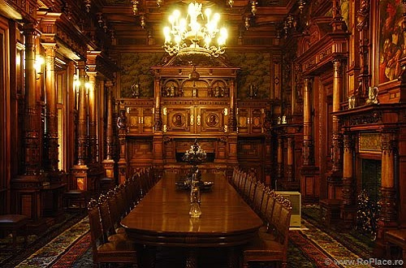

Istoria castelului Peleș
Aşezat la poalele Bucegilor, lângă apa Peleşului, mai sus de Mănăstirea Sinaia - într-un loc sălbatic, dar pitoresc, cunoscut sub numele de masivul Piatra-Arsă - castelul va fi reşedinţa favorită a regelui Carol I, care va supraveghea atent toate lucrările de construcţie până în 1914. Principele Carol a vizitat pentru prima dată Sinaia (numită pe atunci Podul Neagului) la 5-6 august 1866 şi a fost găzduit la mănăstirea din localitate, construită în 1695 de spătarul Mihail Cantacuzino. Domnitorul Carol a revenit la Sinaia în vara anului 1870, iar pe 2 august 1871 îşi va petrece - împreună cu soţia sa Elisabeta - primul „concediu” la Sinaia, fiind găzduiţi tot în chiliile mănăstirii. Prinţul va fi atras de frumuseţea sălbatică a acestor locuri şi va hotărî ca aici să-şi construiască viitoarea reşedinţă. Pentru a cumpăra teren în zonă, Carol a tratat – pe 13 februarie 1872 - cu Dimitrie Ghica, preşedintele Eforiei Spitalelor, căreia îi aparţinea terenul dimprejurul Sinaiei. S-a ajuns, în cele din urmă, la un acord ce prevedea ca Eforia să cedeze Principelui 1000 pogoane alese de el, în schimbul altui teren de 2000 pogoane, situat mai sus, şi pe care Carol l-a cumpărat de la Scarlat Creţulescu.
În primăvara anului 1872, pe 27 mai, domnitorul revine la Sinaia, unde discută cu Dimitrie Ghica posibilitatea de a construi, pe cheltuiala proprie, o aripă nouă patrulaterului mare al mănăstirii, pentru a-şi face mai confortabilă şederea aici.
Pentru a realiza planurile mult doritei reşedinţe de vară, principele Carol I îi va chema la Sinaia, în ziua de 22 august 1872, pe arhitectul vienez Wilhelm Doderer, profesor la Şcoala Politehnică din capitala Imperiului Austro-Ungar. Îl recomanda pentru această sarcină faptul că el construise un stabiliment de băi la Mehadia, pe un teren identic cu cel de la Sinaia.
S-a format şi o comisie care să coordoneze lucrările de strângere a materialelor necesare, formată din Louis Basset, secretarul particular al domnitorului, şi Martin Stöhr, sculptorul oficial al Curţii. Deşi lucrările preliminare au început în toamna anului 1873, ele au înaintat cu greu, piatra de temelie a noii reşedinţe fiind pusă abia pe 10/22 august 1875. Datorită ploilor torenţiale din iulie 1875, lucrările la fundaţie au progresat încet, trebuind făcute săpături profunde în subsolul stâncos.
Cu toate aceste dificultăţi, inerente unei lucrări de o asemenea amploare, în ziua de 10/22 august 1875 s-a pus, în mod solemn, piatra de temelie a castelului Peleş.
Dependinţele castelului, proiectate totodată, cuprind economatul, pavilionul de vânătoare sau casa pădurei, grajdurile, fântânile cu ţevăria de apă şi parcul. Pentru ca să asigurăm edificiului o mare durată şi ca să păstreze ani îndelungaţi amintirea numelui nostru, s-au întrebuinţat pentru clădire cele mai bune procedee de construcţie: fondaţiunile sale au fost aşezate pe adânci temelii de beton şi apărate de puternice ziduri contra împingerii muntelui. |
Peste patru ani, pe 7 octombrie 1883, va avea loc inaugurarea oficială a Castelului Peleş, ceremonie care a început la ora 9 dimineaţa printr-un serviciu divin oficiat de mitropolitul primat în biserica Mănăstirii Sinaia, în prezenţa suveranilor şi a înalţilor demnitari. O dată cu inaugurarea oficială s-a încheiat, de fapt, prima etapă de construcţie a castelului, care a costat 6 500 000 lei aur. Lucrările au continuat însă, Peleşul fiind transformat şi amplificat datorită pasiunii constructive a regelui Carol I, la forma definitivă ajungându-se abia în 1914. Lucrările efectuate între anii 1893-1914 au fost încredinţate arhitectului ceh Karel Liman, care îşi pune o puternică amprentă asupra stilului castelului şi care construieşte şi celelalte edificii ale complexului. Originar din Cehoslovacia, Karel Liman era de mulţi ani ajutorul arhitectului francez Lecomte du Noüy, cu care a conlucrat la renovarea bisericilor Trei Ierarhi şi Sfântul Nicolae Domnesc din Iaşi.
Castelul a fost înconjurat de un splendid parc, la realizarea căruia au contribuit mai mulţi arhitecţi peisagişti, fiecare punându-şi amprenta stilului propriu asupra grădinilor de la Peleş.
Ulterior, regele va apela, pentru amenajarea parcului propriu-zis, - în suprafaţă de 8 ha - la arhitectul F. Rehbhun, care a început lucrările în 1881, concomitent cu terasarea şi drenarea zonei. În jurul castelului s-au realizat şapte serii de splendide terase, în stilul neorenaşterii italiene, bogat împodobite cu statui, coloane şi fântâni. Majoritatea lucrărilor din marmură au fost făcute de sculptorul Raffaello Rommanelli din Florenţa. În apropierea castelului se remarcă numeroase ziduri de sprijin, trepte şi balustrade, sculpturi, bazine, vase ornamentale, basoreliefuri. În 1911, firma Antonio Frilli a furnizat castelului o serie de statuete din marmură de Carrara. În mijlocul curţii există o fântână din marmură de Florenţa, executată de firma Pietro Axerio în 1894. Alături de ea se află doi câini de bronz, lucraţi la Stuttgart de sculptorul Paul Stotz. Întregul parc al castelului a fost prevăzut cu o conductă de apă, pentru irigare, montată în 1898 de firma E. Wolf.
Parcul era deschis publicului larg în timpul lui Carol I.
Castelul Peleş a fost - alături de Palatul Cotroceni - cea mai modernă şi luxoasă reşedinţă regală, dotată cu toate utilităţile pe care confortul cerut de regele Carol I le impunea. Chiar în Europa acelei epoci nu existau prea multe castele care să poată concura cu Peleşul din acest punct de vedere.
Rigoarea şi perfecţiunea cerute de Carol în construirea reşedinţei sale din Sinaia au făcut ca lucrările să fie executate numai de firme străine, în special germane, recunoscute pentru calitatea serviciilor prestate. Cu o meticulozitate tipic germană, regele Carol I a supravegheat atent lucrările de construcţie, aducând multiple modificări proiectului iniţial, conceput de arhitectul Doderer. Atât în arhitectura exterioară a castelului, cât şi în decoraţia interioară, regele şi-a impus stilul, Peleşul punând pronunţat amprenta gusturilor şi ideilor sale.
Lucrările de construire a Castelului Peleş au durat aproape patruzeci de ani, forma actuală căpătând-o abia în 1914. De toată corespondenţa privind construcţia castelului s-a ocupat Louis Basset, secretar particular al regelui şi administrator al Curţii Regale. S-au folosit toate materialele de construcţie posibile, de la lemn - de diverse esenţe - la piatră, cărămidă şi marmură, toate fiind într-un perfect acord cromatic. Arhitectura exterioară a castelului este specifică stilului neorenaşterii germane. Prin elementele ei caracteristice: profiluri şi turnuri ascuţite, forme neregulate, asimetria corpurilor, totul fiind bogat decorat cu lemn sculptat şi marmură.
Între anii 1881-1884 s-au executat lucrările de decoraţie interioară a castelului (zugrăvire, pictură, plafoane sculptate, lambriuri, geamuri pictate). Pictura a fost începută de August Ziegler în 1881, pentru 6 599 franci, când lucrările erau conduse de J. Schultz. O parte din picturile castelului au fost executate în 1907 de Fritz Elsner, pictor decorator al Curţii regale. Cu decoraţiile interioare s-a ocupat, începând din 1881, firma Martin Copony. În acelaşi an a fost lucrat şi acoperişul castelului de către antrepriza lui I. Seber. Tot în această perioadă va fi instalat şi orologiul din turnul mare al castelului, creaţie a firmei Meinhardt, München.
Dorind să dea reşedinţei sale un aspect cât mai modern, Carol a păstrat şemineurile doar ca obiecte de decor, încălzirea castelului făcându-se prin calorifere cu aer cald, instalate - în 1881 – în subteranele edificiului. Vor fi astfel încălzite şi ventilate patruzeci şi patru de camere, două coridoare şi un vestibul. |
 |
Întreaga instalaţie electrică a Peleşului, ce asigura iluminarea tuturor camerelor, a fost încredinţată firmei berlineze „Algemeine Elektricität Gesellschaft” în anul 1894. Uzina electrică a castelului va fi dată în exploatarea permanentă şi întreţinerea Societăţii „Electrica” din Bucureşti, care s-a angajat - la 1 iulie 1915 - să ofere personalul auxiliar tehnic pe care îl va necesita iluminarea castelului. Societatea repara gratis orice defecţiune şi se angaja să garanteze o iluminare continuă, fără nici o întrerupere. Aparatura electro-tehnică a fost livrată Peleşului în 1895 de firma „Hartmann-Braun" din Frankfurt.
Cu lucrările de feronerie ale castelului (fier forjat, scări, grilaje, porţi, garduri, balcoane) au fost însărcinate atelierul I. Haug din Bucureşti şi firma „Beuchelt-Co." din Silezia, prin reprezentantul ei din Bucureşti, inginerul N. Schvalbach. Sculptarea şi decorarea faţadelor au fost executate între 1895 şi 1911 de atelierul lui Wilhelm Dietz.
Cum lângă castel se afla râul Peleş, în 1885 firma Fontaix a făcut un pod peste el, în acelaşi timp fiind terminată şi şoseaua până la Mănăstirea Sinaia.
Peleşul s-a remarcat nu numai prin frumuseţea arhitecturii sale, ci şi prin splendidele decoraţii interioare. Între decoratorii care au lucrat la castel s-au distins August Bembé şi ebenistul Bernhard Ludwig-fiul, principalul artist decorator al Peleşului. Mobila castelului a fost comandată unor firme din străinătate: J.D. Heymann din Hamburg sau Alberto Issel din Genova. Regele Carol şi regina Elisabeta au fost mari iubitori de artă, reuşind să strângă la Peleş o impresionantă colecţie de tablouri, tapiserii, sculpturi, arme, cărţi, covoare, servicii de masă, goblenuri etc.
Între furnizorii de obiecte de valoare ai castelului se numărau diferite magazine de antichităţi din Occident, cum ar fi ,,Giuseppe Salvadori Antichità" din Florenţa, atelierul Paul Telge. Astfel, pe 6 mai 1911, regele Carol I a achiziţionat de la Giuseppe Salvadori, pentru 1 800 de lei, un costum velur roşu brodat cu aur, o armură brodată cu aur (sec. XVIII) şi două covoare orientale brodate cu aur. Colecţia de tablouri pe care regele Carol I o adunase la Peleş era una dintre cele mai valoroase din întreaga Europă, suveranul posedând lucrări ale unor mari maeştri ai picturii universale, cum ar fi: El Greco, Zurbaran, Murillo, Vélasquez, Tizian, Rembrandt, Rubens, Tintoretto, Clouet, Van Dyck, Carpaccio, Rafael Sanzio, Bruegel, Louis David, Correggio, Tiepolo. Toata aceasta colecţie, regele Carol a donat-o - prin testament - poporului român.
Castelul mai posedă o bogată colecţie de tapiserii (de Aubusson – sec.XVIII, de Beauvais – sec. XVII), covoare (Bukhara, Şirvan, Kirman, Mosul), vitralii elveţiene (sec. XVI - XVII), altele provenind de la Castelul Toddington din Anglia, la care se adaugă armele (peste 4 000 piese europene si orientale din sec. XIV-XVII).
|  |